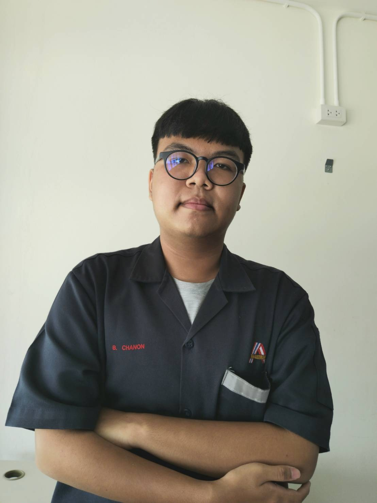

ผู้จัดทำ

1.ข้อมูลส่วนตัว
ชื่อ : นายชานน บุญประเสริฐ
ชื่อเล่น : น้ำมนต์
อายุ : 16 ปี
วันเกิด : 18 มีนาคม 2551
ที่อยู่ 32/51 หมู่.4 ต.ห้วยใหญ่ อ.บางละมุง จ.ชลบุรี 20150
2.ข้อมูลการศึกษา
ระดับชั้นอนุบาล 1-3 : โรงเรียนราษฎร์ประดิษฐ์วิทยา
ระดับชั้นประถม 1-6 : โรงเรียนราษฎร์ประดิษฐ์วิทยา
ระดับชั้นมัธยมต้น 1-3 : โรงเรียนสัตหีบวิทยาคม
ระดับปวช 1-2 : วิทยาลัยเทคนิคสัตหีบ
3.งานอดิเรก
3.1 ฟังเพลง
3.2 เล่นเกม
3.3 อ่านหนังสือการ์ตูน
4.แรงบันดาลใจ
แรงบันดาลใจเกิดจากการที่ที่บ้านมีคอมพิวเตอร์และชอบเล่นเกมจึงสนใจในการสร้างและพัฒนาเกม รวมกับการที่โลกเข้าสู่ยุคของอินเทอร์เน็ต จึงเป็นเหตุผลให้สนใจในการเลือกเรียนคอมพิวเตอร์ เพื่อจะได้เรียนรู้เกี่ยวกับคอมพิวเตอร์ให้มากยิ่งขึ้น
5.ผลงาน
5.1 การแข่งวาดภาพด้วยโปรแกรม Paint - สมัยประถมต้น
5.2 การแข่งสร้างเว็บไซต์ - สมัยประถมปลาย